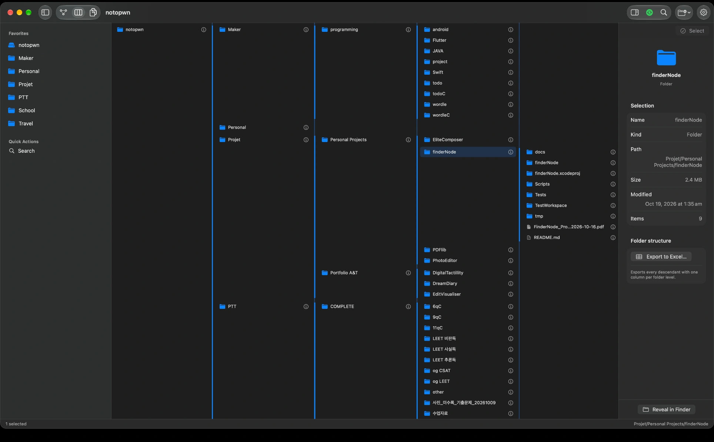

Think through to printing.
Output settings include blank pages after odd-page inputs, front and back covers, file names, and page numbers.
A WORKSPACE FOR YOUR FILES
FinderNode
Open folders side by side. Assemble the PDFs you choose.
From exploring materials to producing the final files.

Actual app screen · macOS · Workspace in development
SEE THE CONNECTIONS
Opening one folder at a time leaves their relationships in your memory. I wanted to lay out what belonged where on the screen, with several folders open so names and paths could be compared side by side.
Open several folders together to compare names and hierarchy side by side.
At first, I thought drawing connections would make folder structures easier to understand. But deep folders made the view crowded, and comparing names called for a different layout.
Use the graph for the overall structure and columns to compare file names side by side. Both views work with the same files.
SAME SOURCES. DIFFERENT RESULTS.
If all that remains is a merged PDF, the next task starts with remembering what went into it. I saved originals separately from output configurations. The same PDF can belong to several bundles, each with its own order and settings.
Actual course materials in use. Choose PDFs on the left, then configure bundles and order in the center and on the right.
Interactive illustration of the assembly model
Switch bundles and choose materials in the example. This web illustration shows how each bundle can reference the same originals without copying them.
Multiple outputs reference the same originals, while order and settings are saved separately. The decisions about what belongs together, and in what sequence, can be reopened and continued later.
A file can live in one place and play several roles in your work. I wanted to work with more than a file list: the user's choices and arrangement mattered too.
Output settings include blank pages after odd-page inputs, front and back covers, file names, and page numbers.
Materials chosen while browsing folders carry into PDF assembly and text editing in the same workspace.
I distinguished interface feedback from actual file operations, using saved and exported results as the basis for checking behavior.
The original report covers the concept, design decisions, and development process. Snapshot: October 16, 2026. PDF in Korean.
Project process report PDF (KO)